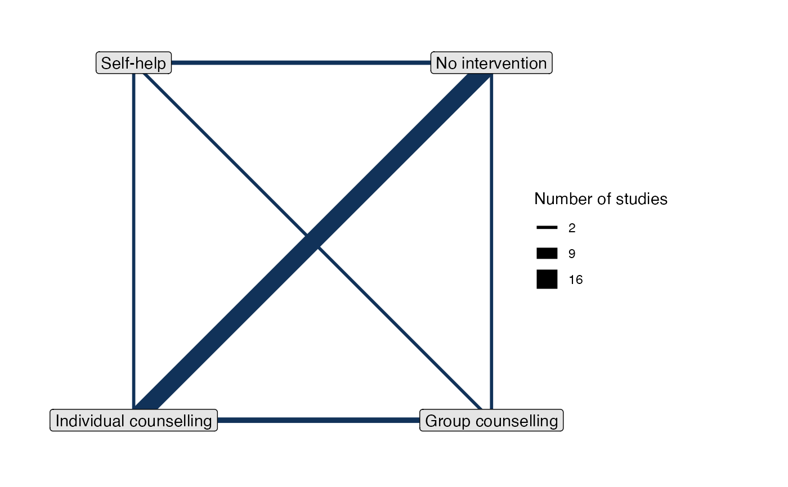

Set up a network containing arm-based aggregate data (AgD), such as event
counts or mean outcomes on each arm. Multiple data sources may be combined
once created using combine_network().
set_agd_arm( data, study, trt, y = NULL, se = NULL, r = NULL, n = NULL, E = NULL, sample_size = NULL, trt_ref = NULL, trt_class = NULL )
| data | a data frame |
|---|---|
| study | column of |
| trt | column of |
| y | column of |
| se | column of |
| r | column of |
| n | column of |
| E | column of |
| sample_size | column of |
| trt_ref | reference treatment for the network, as a single integer, string, or factor. If not specified, a reasonable well-connected default will be chosen (see details). |
| trt_class | column of |
An object of class nma_data
By default, trt_ref = NULL and a network reference treatment will be chosen
that attempts to maximise computational efficiency and stability. If an
alternative reference treatment is chosen and the model runs slowly or has
low effective sample size (ESS) this may be the cause - try letting the
default reference treatment be used instead. Regardless of which treatment is
used as the network reference at the model fitting stage, results can be
transformed afterwards: see the trt_ref argument of
relative_effects() and predict.stan_nma().
The sample_size argument is optional, but when specified:
Enables automatic centering of predictors (center = TRUE) in nma()
when a regression model is given for a network combining IPD and AgD
Enables production of study-specific relative effects, rank probabilities, etc. for studies in the network when a regression model is given
Nodes in plot.nma_data() may be weighted by sample size
If a Binomial outcome is specified and sample_size is omitted, n will be
used as the sample size by default. If a Multinomial outcome is specified and
sample_size is omitted, the sample size will be determined automatically
from the supplied counts by default.
All arguments specifying columns of data accept the following:
A column name as a character string, e.g. study = "studyc"
A bare column name, e.g. study = studyc
dplyr::mutate() style semantics for inline variable transformations, e.g. study = paste(author, year)
set_ipd() for individual patient data, set_agd_contrast() for
contrast-based aggregate data, and combine_network() for combining
several data sources in one network.
print.nma_data() for the print method displaying details of the
network, and plot.nma_data() for network plots.
#> studyn trtn trtc r n #> 1 1 1 No intervention 9 140 #> 2 1 3 Individual counselling 23 140 #> 3 1 4 Group counselling 10 138 #> 4 2 2 Self-help 11 78 #> 5 2 3 Individual counselling 12 85 #> 6 2 4 Group counselling 29 170smk_net <- set_agd_arm(smoking, study = studyn, trt = trtc, r = r, n = n, trt_ref = "No intervention") # Print details smk_net#> A network with 24 AgD studies (arm-based). #> #> ------------------------------------------------------- AgD studies (arm-based) ---- #> Study Treatments #> 1 3: No intervention | Individual counselling | Group counselling #> 2 3: Self-help | Individual counselling | Group counselling #> 3 2: No intervention | Individual counselling #> 4 2: No intervention | Individual counselling #> 5 2: No intervention | Individual counselling #> 6 2: No intervention | Individual counselling #> 7 2: No intervention | Individual counselling #> 8 2: No intervention | Individual counselling #> 9 2: No intervention | Individual counselling #> 10 2: No intervention | Self-help #> ... plus 14 more studies #> #> Outcome type: count #> ------------------------------------------------------------------------------------ #> Total number of treatments: 4 #> Total number of studies: 24 #> Reference treatment is: No intervention #> Network is connected